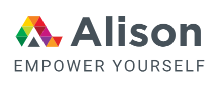

Hazem Afana
Civil Engineer | Project Manager | MBA in Artificial Intelligence
PMP® | MEAL DPro® | Social Good DPro® | Project DPro®
Palestine | +970 599 498 524 | h.afana@mail.ru
linkedin.com/in/hazem-afana-a377b8387
linkedin.com/in/hazem-afana-a377b8387
Professional Summary
Results-driven Project Manager and Civil Engineer with 16 years of progressive experience delivering construction, infrastructure, shelter, and WASH-related projects across Palestine and the UAE. Currently leading a $9 million luxury hotel development in Bethlehem while managing multi-disciplinary teams and complex stakeholder environments. PMP® certified with specialized humanitarian credentials (MEAL DPro®, Social Good DPro®, PMD Pro®). Strong business acumen and business development intelligence, combined with growing expertise in AI applications for project management and data-driven decision making. Proven ability to deliver high-quality projects on time and within budget under challenging conditions.
Core Competencies
Technical Civil Engineering
Site Planning & Layout • Construction & Site Supervision • International Health & Safety Compliance • Quantity Surveying & BOQ Preparation • Infrastructure & Road Works • Residential, Commercial & Educational Buildings • Quality Control & Assurance • Surveying & Shop Drawings Review • Structural Analysis Software (PROKON, ETABS, SAFE)
Project Management
Full Project Lifecycle Management • Budget & Cost Control • Schedule Management • Risk Analysis & Mitigation • Stakeholder & Owner Management • Client Communication & Meetings • Negotiation & Deal Management • Team Leadership & Coordination • Quality Management • Contract & Subcontractor Management
Humanitarian & Development
Shelter Rehabilitation & Reconstruction • WASH-related Infrastructure • MEAL (Monitoring, Evaluation, Accountability & Learning) • Theory of Change & Logical Frameworks • Results Frameworks • Accountability to Affected Populations • Community Participation • Social Good Project Approaches
Business & Analytical Skills
Business Acumen • Business Development Intelligence • Strategic Business Management • Business Performance Management • Business Intelligence Fundamentals • Data Analysis (Excel) • AI Applications in Project Management • Machine Learning Fundamentals
Professional Certifications
 PMP®
Project Management Institute (PMI)
PMP®
Project Management Institute (PMI)
 MEAL DPro®
PM4NGOs
MEAL DPro®
PM4NGOs
 Social Good DPro®
PM4NGOs
Social Good DPro®
PM4NGOs
 Project DPro® (PMD Pro®)
PM4NGOs
Project DPro® (PMD Pro®)
PM4NGOs
 Core Humanitarian Essentials
(CHE)
Core Humanitarian Essentials
(CHE)
 TPM in WASH Emergencies
TPM in WASH Emergencies

AI in Project Management AlisonProfessional Experience
Project Manager
- Direct the full lifecycle of the Bethlehem Hotel Project (9,737 m²), a $9 million luxury development recognized as one of the premier hotels in the West Bank.
- Lead and align multi-disciplinary teams across consultant and contractor sides to consistently deliver on schedule, quality, and budget targets.
- Concurrently oversee a portfolio of smaller internal projects while maintaining rigorous control over cost, quality, and timelines.
- Manage high-level owner communications, negotiations, stakeholder relations, and critical on-site decision-making.
Civil Engineer
- Executed large-scale construction and infrastructure projects in a demanding contractor environment, leading teams of up to 19 engineers and 300 labourers.
- Played a key role in the successful delivery of major developments, including:
- Kalba Kornich Project (12,000 m²) – 16 condominiums
- Victoria International School (19,000 m²) – First phase coordination and execution
- Masid Jaber Project (500 m²) – Complete project lifecycle management
- Drove quality assurance, schedule compliance, and seamless coordination with consultants and clients.
Supervisor Civil Engineer
- Supervised both design office and site operations for an extensive portfolio of residential projects across the West Bank.
- Successfully delivered key concurrent assignments:
- Awkaf Commercial Building (5,000 m²) – Supervisor Engineer
- Alrayhan Yard (14 Villas for JAWWAL) – Inspector
- Rawda 2 Residential Building – Civil Engineer
- Ensured consistent quality standards and effective coordination between design, construction, and client requirements.
Site Engineer
- Served as Contractor Engineer on the Saudi-funded Qalandia 7 Shelters Reconstruction project, contributing to the rehabilitation of shelters for vulnerable populations.
Technical Civil Engineer
- Developed comprehensive technical expertise through progressive responsibility in design and site supervision.
- Delivered key contributions on projects including:
- Awkaf Commercial Building (1,700 m²) – Site Engineer
- Europe Hospital Maintenance – Site Engineer (specialized finishing works)
- Ayed Basheeti Street (1,000 m road + infrastructure) – Site Engineer (7-month